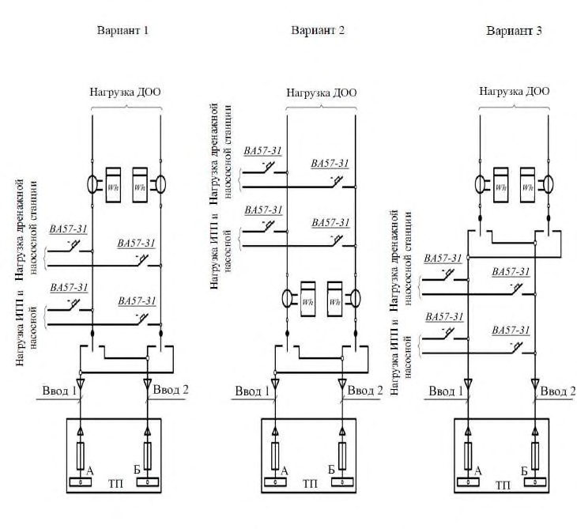

СП 252.1325800.2016 «Здания дошкольных образовательных организаций. Правила прое»
О документе: разработчики, утверждение, регистрация, ключевые слова
\_\_\_\_\_\_\_\_\_\_\_\_\_\_\_\_\_\_\_\_\_\_\_\_\_\_\_\_\_\_\_\_\_\_\_\_\_\_\_\_\_\_\_\_\_\_\_\_\_\_\_\_\_\_\_\_\_\_\_\_\_\_\_\_
СВОД ПРАВИЛ
СП 252.1325800.2016
Издание официальное
- 1 ИСПОЛНИТЕЛИ - ОАО «МНИИТЭП», НИИ Гигиены и охраны здоровья детей и подростков, ЦНИИСК им. А.В. Кучеренко
- 2 ВНЕСЕН Техническим комитетом по стандартизации ТК 465 «Строительство»
- 3 ПОДГОТОВЛЕН к утверждению Департаментом градостроительной деятельности и архитектуры Министерства строительства и жилищно-коммунального хозяйства Российской Федерации (Минстрой России)
- 4 УТВЕРЖДЕН приказом Министерства строительства и жилищнокоммунального хозяйства Российской Федерации от 17 августа 2016 г. № 573/пр и введен в действие с 18 февраля 2017 г.
- 5 ЗАРЕГИСТРИРОВАН Федеральным агентством по техническому регулированию и метрологии (Росстандарт)
- 6 ВВЕДЕН ВПЕРВЫЕ
В случае пересмотра (замены) или отмены настоящего свода правил соответствующее уведомление будет опубликовано в установленном порядке. Соответствующая информация, уведомление и тексты размещаются также в информационной системе общего пользования - на официальном сайте разработчика (Минстрой России) в сети Интернет
© Минстрой России, 2016
Настоящий нормативный документ не может быть полностью или частично воспроизведен, тиражирован и распространен в качестве официального издания на территории Российской Федерации без разрешения Минстроя России
Дата введения - 2016-02-18
УДК 696: ОКС 91.040.99 Т62
Ключевые слова: свод правил, дошкольные образовательные организации, типология, вариативные формы образования
Руководитель предприятия-разработчика Открытое акционерное общество г. Москвы Московский научноисследовательский и проектный институт типологии, экспериментального проектирования
| Генеральный директор ОАО «Моспроект-3» Управляющей организации ОАО МНИИТЭП | Генеральный директор ОАО «Моспроект-3» Управляющей организации ОАО МНИИТЭП | А.Д. Меркулова |
|---|---|---|
| Руководитель разработки | Заместитель генерального директора по научной работе, ОАО МНИИТЭП, д-р техн. наук, проф. | В.В. Гурьев |
| Исполнители: | Начальник проектного отделения | А.П. Зобнин |
| Помощник руководителя по типологии | Т.С. Скобелева | |
| Руководитель отдела, канд. экон. наук | Ю.В. Герасименко | |
| Главный специалист отдела | А.Н. Добровольский | |
| Руководитель группы | Е.В. Хаимова- | |
| инженеров | Малькова | |
| Инженер отдела | М.В. Атаманенко | |
| Руководитель отдела, канд. физ.-мат. наук | В.М. Дорофеев | |
| Ведущий научный сотрудник отдела, канд. экон. наук | Е.А. Лепешкина |
| Руководитель группы архитекторов Начальник отдела Главный инженер отдела Начальник отдела | А.Ю. Солодова И.Ю. Спиридонов Т.В. Крюкова А.В. Кузилин |
|---|---|
| СОИСПОЛНИТЕЛИ Директор по научной Деятельности ОАО «Центральный научно- исследовательский и проектный институт жилых и общественных зданий» (ЦНИИЭП жилища), канд. архит., проф. Руководитель сектора, ЦНИИЭП жилища, канд.архит. Заведующая лаборатории, НИИ гигиены и охраны здоровья детей и подростков ФГБНУ НЦЗД, д-р мед. наук, проф. Ведущий научный сотрудник,НИИ гигиены и охраны здоровья детей и подростков ФГБНУ НЦЗД, канд. мед. наук Руководитель Научного | А.А. Магай Б.З. Воронова |
| А.Р. Крюков | |
| М.И. Степанова | |
| экспертного бюро |
безопасности в строительстве ЦНИИСК им. В.А. Кучеренко ОАО "НИЦ "Строительство", д-р техн. наук Заместитель руководителя Научного экспертного бюро пожарной, экологической безопасности в строительстве ЦНИИСК им. В.А. Кучеренко ОАО "НИЦ "Строительство", канд. техн. наук Ведущий специалист Научного экспертного бюро пожарной, экологической безопасности в строительстве ЦНИИСК им. В.А. Кучеренко ОАО "НИЦ "Строительство" Начальник отдела, Департамент градостроительной политики г. Москвы, канд. архит.
В.В. Пивоваров
П.П. Колесников
С.И. Яхкинд
Введение
Настоящий свод правил разработан с целью проектного обеспечения удобства и безопасности пребывания детей и взрослых на участках и в зданиях дошкольных образовательных организаций при обеспечении современного уровня физического развития, воспитания и дошкольного образования. При разработке настоящего свода правил соблюдены требования Федерального закона от 30 декабря 2009 г. № 384-ФЗ «Технического регламента о безопасности зданий и сооружений к зданиям дошкольных образовательных организаций» [4] и обеспечено соответствие требованиям Федерального закона от 27 декабря 2002 г. № 184-Ф3 «О техническом регулировании» [1] в дополнение к СП 118.13330 с детализацией нормативных требований к зданиям дошкольных образовательных организаций. Учтены положения Федерального закона от 29 декабря 2012 г. № 273-ФЗ «Об образовании в Российской Федерации» [2]; Федерального закона от 22 июля 2008 г. № 123-ФЗ «Технический регламент о требованиях пожарной безопасности» [3]; Федерального закона от 23 ноября 2009 г. № 261-ФЗ «Об энергосбережении и о повышении энергоэффективности и о внесении изменений в отдельные законодательные акты Российской Федерации», федеральных законов в области безопасности объектов капитального строительства, энергоэффективности [5], а также санитарноэпидемиологических требований к зданиям дошкольных образовательных организаций и постановления.
Свод правил выполнен авторским коллективом: ОАО Московский научноисследовательский и проектный институт типологии и экспериментального проектирования: (д-р техн. наук В.В.Гурьев , А.П. Зобнин , канд. архит. Б.В. Дмитриев (отв.исп. темы), архит. Т.С. Скобелева , канд. физ.-мат. наук В.М. Дорофеев , канд. экон. наук Е.А. Лепёшкина , канд. экон. наук Ю.В. Герасименко , инженеры: А.В. Кузилин , И.Ю. Спиридонов , Т.В. Крюкова , А.Н. Добровольский , Е.В. Хаимова-Малькова , инж. М.В. Атаманенко , ОАО Центральный научно-исследовательский и проектный институт жилых и общественных зданий «ЦНИИЭП жилища» (канд. архит. А.А. Магай , канд. архит. А.Р. Крюков ), НИИ гигиены и охраны здоровья детей и подростков ФГБНУ НЦЗД(д-р мед. наук М.И. Степанова , канд. мед. наук Б.З. Воронова ), ЦНИИСК им. В.А. Кучеренко (д-р техн. наук Ю.В. Кривцов , канд. техн. наук В.В. Пивоваров , П.П. Колесников ), Департамент образования г. Москвы (инж. В.В. Никитин ), Департамент градостроительной политики г. Москвы (канд. архит. С.И. Яхкинд ).
\_\_\_\_\_\_\_\_\_\_\_\_\_\_\_\_\_\_\_\_\_\_\_\_\_\_\_\_\_\_\_\_\_\_\_\_\_\_\_\_\_\_\_\_\_\_\_\_\_\_\_\_\_\_\_\_\_\_\_\_\_\_\_\_
Preschool educational institution buildings. Design rules
\_\_\_\_\_\_\_\_\_\_\_\_\_\_\_\_\_\_\_\_\_\_\_\_\_\_\_\_\_\_\_\_\_\_\_\_\_\_\_\_\_\_\_\_\_\_\_\_\_\_\_\_\_\_\_\_\_\_\_\_\_\_\_\_\_\_\_\_
1Область применения
- к градостроительному размещению участков и зданий ДОО, с учётом инженерной и транспортной инфраструктуры;
- к комплексному благоустройству (и озеленению) участков ДОО;
- к функционально-планировочному зонированию площадок участков и групп помещений ДОО;
- к пожарной безопасности ДОО;
- к объемно-планировочным конструктивным решениям зданий ДОО;
- к инженерно-техническому оборудованию, отделке и микроклимату помещений ДОО;
- к энергетической эффективности и безопасной эксплуатации ДОО.
\_\_\_\_\_\_\_\_\_\_\_\_\_\_\_\_\_\_\_\_\_\_\_\_\_\_\_\_\_\_\_\_\_\_\_\_\_\_\_\_\_\_\_\_\_\_\_\_\_\_\_\_\_\_\_\_\_\_\_\_\_\_\_\_\_ для временного пребывания детей.
\_\_\_\_\_\_\_\_\_\_\_\_\_\_\_\_\_\_\_\_\_\_\_\_\_\_\_\_\_\_\_\_\_\_\_\_\_\_\_\_\_\_\_\_\_\_\_\_\_\_\_\_\_\_\_\_\_\_\_\_\_\_\_\_\_
Издание официальное
- отдельно стоящих на отдельном участке или на одном участке со зданиями жилого, общественного и многофункционального назначения, а также в составе комплексов зданий общеобразовательных учреждений и многофункциональных комплексов, во временных (вахтовых) посёлках;
- встроенных, пристроенных, встроенно-пристроенных в жилые дома (многоквартирные, одноквартирные), в общественные или многофункциональные здания, в сборно-разборных и/или передвижных зданиях и сооружениях.
2Нормативные ссылки
ГОСТ 17677-82 Светильники. Общие технические условия
ГОСТ 19245-93 Коляски детские. Общие технические условия
ГОСТ 21786-76 Система «Человек-машина». Сигнализаторы звуковые неречевых сообщений. Общие эргономические требования
ГОСТ 27751-2014 Надежность строительных конструкций и оснований. Основные положения
ГОСТ 30247.1-1994 Конструкции строительные. Методы испытаний на огнестойкость. Несущие и ограждающие конструкции
ГОСТ 30494-2011 Здания жилые и общественные. Параметры микроклимата в помещениях
ГОСТ 31937-2011 Здания и сооружения. Правила обследования и мониторинга технического состояния
ГОСТ Р 50602-93 Кресла-коляски. Максимальные габаритные размеры ГОСТ Р 51261-99 Устройства опорные стационарные реабилитационные.
Типы и технические требования
ГОСТ Р 51630-2000 Платформы подъёмные с вертикальным и наклонным перемещением инвалидов. Технические требования доступности
ГОСТ Р 51631-2008 Лифты пассажирские. Технические требования доступности, включая доступность для инвалидов и других маломобильных групп населения
ГОСТ Р 51671-2000 Средства связи и информации технические общего пользования, доступные для инвалидов
ГОСТ Р 51764-2001 Устройства подъёмные транспортные реабилитационные для инвалидов. Общие технические требования
ГОСТ Р 52131-2003 Средства отображения информации знаковые для инвалидов. Технические требования
ГОСТ Р 52169-2012 Оборудование и покрытия детских игровых площадок.
Безопасность конструкции и методы испытаний. Общие требования
ГОСТ Р 52301-2004 Оборудование детских игровых площадок. Безопасность при эксплуатации. Общие требования
ГОСТ Р 52875-2007 Указатели тактильные наземные для инвалидов по зрению. Технические требования
ГОСТ Р 53491.1-2009 Бассейны. Подготовка воды. Часть 1. Общие требования
ГОСТ Р 53491.2-2012 Бассейны. Подготовка воды. Часть 2 Требования безопасности
СП 1.13130.2009 Системы противопожарной защиты. Эвакуационные пути и выходы (с изменением № 1)
СП 2.13130.2012 Системы противопожарной защиты. Обеспечение огнестойкости объектов защиты (с изменением № 1)
СП 3.13130-2009 Системы противопожарной защиты. Система оповещения и управления эвакуацией людей при пожаре. Требования пожарной безопасности
СП 4.13130.2013 Системы противопожарной защиты. Ограничение распространения пожара на объектах защиты. Требования к объемнопланировочным и конструктивным решениям
СП 5.13130.2009 Системы противопожарной защиты. Установки пожарной сигнализации и пожаротушения автоматические. Нормы и правила проектирования (с изменением № 1)
СП 7.13130.2013 Отопление, вентиляция и кондиционирование. Противопожарные требования
СП 8.13130.2009 Системы противопожарной защиты. Источники наружного противопожарного водоснабжения. Требования пожарной безопасности (с изменением № 1)
СП 10.13130.2009 Системы противопожарной защиты. Внутренний противопожарный водопровод. Требования пожарной безопасности (с изменением № 1)
СП 12.13130.2009 Определение категорий помещений, зданий и наружных установок по взрывопожарной и пожарной опасности (с изменением № 1)
СП 14.13330.2014 «СНиП II-7-81* Строительство в сейсмических районах» (с изменением № 1)
СП 17.13330.2014 «СНиП II-26-76 Кровли»
СП 30.13330.2012 «СНиП 2.04.01-85* Внутренний водопровод и канализация зданий»
СП 32.13330.2012 «СНиП 2.04.03-85 Канализация. Наружные сети и сооружения» (с изменением № 1)
СП 42.13330.2011 «СНиП 2.07.01-89* Градостроительство. Планировка и застройка городских и сельских поселений»
СП 50.13330.2012 «СНиП 23-02-2003 Тепловая защита зданий»
СП 51.13330.2011 «СНиП 23-03-2003 Защита от шума»
СП 52.13330.2011 «СНиП 23-05-95* Естественное и искусственное освещение»
СП 54.13330.2011 «СНиП 31-01-2003 Здания жилые многоквартирные»
СП 55.13330.2011 «СНиП 31-02-2001 Дома жилые одноквартирные»
СП 59.13330.2012 «СНиП 35-01-2001 Доступность зданий и сооружений для маломобильных групп населения» (с изменением № 1)
СП 60.13330.2012 «СНиП 41-01-2003 Отопление, вентиляция и кондиционирование воздуха»
СП 62.13330.2011 «СНиП 42-01-2002 Газораспределительные системы» (с изменением № 1)
СП 116.13330.2012 «СНиП 22-02-2003 Инженерная защита территорий, зданий и сооружений от опасных геологических процессов»
СП 118.13330.2012 «СНиП 31-06-2009 Общественные здания и сооружения» (с изменением № 1)
[СП 131.13330.2012 «СНиП 23-01-99* Строительная климатология» (с изменением № 2)](http://docs.cntd.ru/document/1200095546)
СП 133.13330.2012 Сети проводного радиовещания и оповещения в зданиях и сооружениях. Нормы проектирования
СП 134.13330.2012 Системы электросвязи зданий и сооружений. Основные положения проектирования
СП 136.13330.2012 Здания и сооружения. Общие положения проектирования с учётом доступности для маломобильных групп населения
СП 137.13330.2012 Жилая среда с планировочными элементами, доступными инвалидам. Правила проектирования
СП 138.13330.2012 Общественные здания и сооружения, доступные маломобильным группам населения. Правила проектирования
СП 140.13330.2012 Городская среда. Правила проектирования для маломобильных групп населения
СП 160.1325800.2014 Здания и комплексы многофункциональные. Правила проектирования
СанПиН 2.1.2.1188-03 Плавательные бассейны. Гигиенические требования к устройству, эксплуатации и качеству воды. Контроль качества
СанПиН 2.1.2.2645-10 Санитарно-эпидемиологические требования к условиям проживания в жилых зданиях и помещениях
СанПиН 2.1.2.3150-13 Санитарно-эпидемиологические требования к размещению, устройству, оборудованию, содержанию и режиму работы бань и саун
СанПиН 2.2.1/2.1.1.1076-01 Гигиенические требования к инсоляции и солнцезащите помещений жилых и общественных зданий и территорий
СанПиН 2.2.1/2.1.1.1200-03 Санитарно-защитные зоны и санитарная классификация предприятий и иных объектов
СанПиН 2.2.1/2.1.1.1278-03 Гигиенические требования к естественному, искусственному и совмещенному освещению жилых и общественных зданий
СанПиН 2.2.1/2.1.1.2585-10 изменения и дополнения к СанПиН 2.2.1/2.1.1.1278-03
СанПиН 2.2.4.548-96 Гигиенические требования к микроклимату производственных помещений. Санитарные нормы и правила
СанПиН 2.3.6.1079-01 Санитарно-эпидемиологические требования к организациям общественного питания, изготовлению и оборотоспособности в них пищевых продуктов и продовольственного сырья
СанПиН 2.4.1.3049-13 Санитарно-эпидемиологические требования к устройству, содержанию и организации режима работы дошкольных образовательных организаций
СанПиН 2.4.1.3147-13 Санитарно-эпидемиологические требования к дошкольным группам, размещенным в жилых помещениях жилищного фонда
СанПиН 2.4.4.1251-2003 Санитарно-эпидемиологические требования к учреждениям дополнительного образования детей (внешкольные учреждения) Примечание - При пользовании настоящим сводом правил целесообразно проверить действие ссылочных документов в информационной системе общего пользования - на официальном сайте федерального органа исполнительной власти в сфере стандартизации в сети Интернет или по ежегодному информационному указателю «Национальные стандарты», который опубликован по состоянию на 1 января текущего года, и по выпускам ежемесячного информационного указателя «Национальные стандарты» за текущий год. Если заменен ссылочный документ, на который дана недатированная ссылка, то рекомендуется использовать действующую версию этого документа с учетом всех внесенных в данную версию изменений. Если заменен ссылочный документ, на который дана датированная ссылка, то рекомендуется использовать версию этого документа с указанным выше годом утверждения (принятия). Если после утверждения настоящего свода правил в ссылочный документ, на который дана датированная ссылка, внесено изменение, затрагивающее положение, на которое дана ссылка, то это положение рекомендуется применять без учета данного изменения. Если ссылочный документ отменен без замены, то положение, в котором дана ссылка на него, рекомендуется применять в части, не затрагивающей эту ссылку. Сведения о действии сводов правил целесообразно проверить в Федеральном информационном фонде технических регламентов и стандартов.
3Термины и определения
В настоящем своде правил применены следующие термины с соответствующими определениями:
- 3.1дошкольная образовательная организация; ДОО
- Образовательная организация, осуществляющая в качестве основной цели своей деятельности образовательную деятельность по образовательным программам дошкольного образования, присмотр и уход за детьми.
- 3.2обучающиеся с ограниченными возможностями здоровья
- Физические лица, имеющие недостатки в физическом и (или) психологическом развитии, подтвержденные психолого-медико-педагогической комиссией и препятствующие получению образования без создания специальных условий.
- 3.3дошкольная группа ДОО
- Организационно-структурная единица (ячейка) образовательной организации, в которой осуществляется образовательная деятельность по образовательным программам дошкольного образования. Примечание Виды дошкольных групп: : младенческий возраст - от двух месяцев до одного года; ранний возраст по возрастному составу детей - от одного года до трех лет; дошкольный возраст - от трех лет до восьми лет;
- по режиму пребывания детей
- кратковременного пребывания - до 5 ч, сокращённого дня - до 10 ч, полного дня - до 12 ч, продлённого дня - до 14 ч, круглосуточного пребывания - 24 ч.
- по контингенту детей
- общеразвивающий -только здоровых детей; компенсирующееоздоровительный - только обучающихся с ограниченными возможностями здоровья; совмещённый - здоровых детей и обучающихся с ограниченными возможностями здоровья (определяемый по санитарным нормам и правилам); по образовательным программам различной направленности : общеразвивающая - дошкольная группа ДОО, осуществляющая реализацию образовательной программы дошкольного образования; комбинированная - дошкольная группа ДОО, в которой осуществляется совместное образование здоровых детей и детей с ограниченными возможностями здоровья в соответствии с образовательной программой дошкольного образования, адаптированной для детей с ограниченными возможностями здоровья с учётом особенностей их психофизического развития, индивидуальных возможностей, обеспечивающей коррекцию нарушений развития и социальную адаптацию обучающихся с ограниченными возможностями здоровья; компенсирующая - дошкольная группа ДОО, осуществляющая реализацию адаптированной образовательной программы дошкольного образования для детей с ограниченными возможностями здоровья с учётом особенностей их психофизического развития, индивидуальных возможностей, обеспечивающей коррекцию нарушений развития и социальную адаптацию обучающихся с ограниченными возможностями здоровья; оздоровительная - дошкольная группа ДОО, создаваемая для детей с туберкулёзной интоксикацией, часто болеющих детей и других категорий детей, нуждающихся в длительном лечении и проведении для них необходимого комплекса специальных лечебно-оздоровительных мероприятий, в которой осуществляется реализация образовательной программы дошкольного образования, а также комплекс санитарно-гигиенических, лечебно-оздоровительных и профилактических мероприятий и процедур.
- 3.4ДОО общего типа
- Для всех дошкольных групп ДОО реализует общеразвивающую и/или комбинированную образовательную программу.
- 3.5ДОО специализированного типа
- Для дошкольных групп ДОО обучающихся с ограниченными возможностями здоровья реализует компенсирующую и/или оздоровительную образовательную программу.
- 3.6участок ДОО
- Огороженная земельная территория комплексного благоустройства, непосредственно примыкающая к фасадам зданий ДОО.
- 3.7функционально-планировочная зона участка ДОО
- Территориально-планировочное деление участка ДОО на основные и вспомогательные площадки, предназначенные для выполнения определённых функций.
- 3.8основная площадка участка ДОО
- Часть территории, предназначенная для изолированного использования дошкольными группами или отдельными детьми в сопровождении персонала ДОО и включающая в себя детские рекреационные площадки (игровые, спортивные).
- 3.9вспомогательные площадки участка ДОО
- Площадки, предназначенные для открытого использования персоналом в том числе: хозяйственные, обеспечивающие функции санитарно-бытового обслуживания и хранения инвентаря; подсобно-технические, обеспечивающие функции общественного питания и инженерно-технического обслуживания; коммуникационные, для размещения путей пешего прохода посетителей и заезда автомашин обслуживания (санитарно-бытового, технического), автомашин специальных служб (безопасности, спасения); озеленения.
- 3.10функционально-планировочная зона помещений ДОО
- Объёмнопланировочная группа (блок) помещений, предназначенных для выполнения определенных функций, в том числе основных, дополнительных, вспомогательных.
- 3.11основное помещение ДОО
- Помещение, предназначенное для размещения и обеспечения режима пребывания детей в группах, включает в себя групповые, игровые, спальные помещения.
- 3.12дополнительное помещение ДОО
- Помещение, предназначенное для поочередного кратковременного использования дошкольными группами или отдельными детьми в сопровождении персонала ДОО (физкультурный и музыкальный залы, бассейн, кружковые и учебные помещения, раздевальные).
- 3.13вспомогательное помещение ДОО
- Функционально-планировочная зона, обслуживающая работу основных и дополнительных помещений и включающая в себя: коммуникационные помещения, обеспечивающие внутреннюю пользовательскую взаимосвязь посетителей, сотрудников и детей в помещениях и их эвакуацию из зданий в экстренных случаях (тамбуры, коридоры); открытые помещения, не отапливаемые или отапливаемые частично с ненормируемым температурно-влажностным режимом, неостеклённые или остеклённые с ограждающими конструкциями, не нормируемыми по теплозащите (лоджии, балконы, веранды, галереи, беседки, террасы, мостовые переходы между зданиями); административно-бытовые помещения для работы персонала (кабинеты, пищеблок, постирочная, медицинские помещения, мастерские, рабочие комнаты); технические помещения, обеспечивающие размещение и функционирование инженерного оборудования; подсобные помещения для складирования и хранения оборудования, мебели, инструментов и инвентаря, хозяйственно-бытовых средств и принадлежностей (санитарно-бытовые, кладовые, гардеробные, встроенные шкафы).
- 3.14обособленный вход
- Вход только в одну функциональнопланировочную зону помещений или в одно помещение.
- 3.15комплекс ДОО
- Форма местной градостроительной организации сети ДОО, состоящая из центра дошкольного образования и отделений ДОО, расположенных в территориально разобщённых зданиях и помещениях.
- 3.16центр дошкольного образования
- Здание с административными и бытовыми помещениями для осуществления функций административного управления отделениями ДОО.
- 3.17ДОО вариативных форм образования
- Организация, осуществляющая периодическую кратковременную работу с приходящими детьми, не посещающими ДОО общего типа, и с сопровождающими их родителями (или законными представителями).
- Примечание - Возможный состав помещений ДОО вариативных форм образования
- центр игровой поддержки ребёнка, консультативный пункт, лекотека, служба ранней помощи.
- 3.18центр игровой поддержки ребёнка
- Функционально-планировочная группа помещений ДОО вариативных форм образования для осуществления психолого-педагогических консультаций родителей (законных представителей) детей в возрасте от шести месяцев до трех лет, которые по состоянию здоровья или развития не могут посещать образовательные учреждения.
- 3.19консультативный центр
- Помещение или группа помещений ДОО, где оказывается методическая психолого-педагогическая, диагностическая и консультативная помощь родителям (законным представителям) обучающихся, при получении ими дошкольного образования в форме семейного образования.
- 3.20служба ранней помощи
- Функционально-планировочная группа помещений ДОО вариативных форм образования для детей в возрасте от двух месяцев до четырех лет с выявленными нарушениями развития или с риском нарушения развития.
- 3.21лекотека
- Функционально-планировочная группа помещений ДОО вариативных форм образования для обеспечения психолого-педагогического сопровождения детей от двух месяцев до семи лет с нарушениями развития, поддержки развития личности при участии их родителей (или законных представителей), а также оказания им психолого-педагогической помощи.
- медицинский блок
- Помещение или группа помещений (кабинеты врача-педиатра (фельдшера) и процедурный) для оказания первичной медикосанитарной помощи в ДОО общего типа;
- отделение медицинской помощи
- Группа помещений или здание для оказания специализированной и/или паллиативной медицинской помощи в ДОО специализированного типа.
4Общие положения
.4.1.3049, СанПиН 2.2.1/2.1.1.1200-03, СанПиН 2.4.1.3147, СанПиН 2.4.4.1251. Для ДОО вариативных форм образования, функционирующих автономно, допускается руководствоваться положениями СанПиН 2.4.1.3049 в части требований к размещению, необходимых функциональных групп помещений, а также к естественному и искусственному освещению, водоснабжению и канализации, отоплению и вентиляции.
5Требования к организации сети, типы и виды дошкольных образовательных организаций
Комплекс ДОО рекомендуется проектировать для жилых образований с числом жителей не менее 5000 чел.
Радиус доступности обслуживания от места проживания до ДОО общего типа должен быть, не более:
- 300 м - в крупнейших, крупных, больших и средних городах;
- 500 м - в малых городах и сельских поселениях, при малоэтажной (1-3 этажной) застройке.
Вышеуказанные радиусы доступности обслуживания не распространяются на ДОО специализированного типа.
Для климатических подрайонов IА, IБ, IГ, IД и IIА, согласно СП 131.13330, а также в зоне пустынь и полупустынь, в условиях сложного рельефа вышеуказанные радиусы обслуживания следует уменьшать на 30%.
6Требования к размещению и функциональному составу участков дошкольных образовательных организаций
- атмосферного воздуха в зоне пониженных скоростей, преобладающих ветровых потоков, аэрации и газопылевого содержания, не допускается превышение установленных санитарными нормами предельно допустимых концентраций (ПДК) загрязнений - 0,8 ПДК;
- естественного освещения и инсоляции в основных помещениях ДОО не допуская, по условиям зрительной работы, недостаточность (менее 90% нормируемого значения КЕО) нормативного естественного освещения в светлое время суток и не применяя совмещённое освещение, с компенсацией этой недостаточности искусственным освещением. В условиях застройки, в отдельных случаях, допускается одноразовая прерывность инсоляции жилых помещений при условии увеличения суммарной продолжительности инсоляции в течение дня на 0,5 ч для каждой зоны соответственно.
- уровней шума не более 60 дБА.
- до соседних зданий и сооружений - по нормам естественной освещённости и инсоляции, но не менее 12м;
- до линий градостроительного регулирования («красных линий») уличнодорожной сети проездов в жилых зонах не менее 25м - в городах; 10м - в сельской местности;
- до бровки земляного полотна автомобильных дорог общей сети (категорий IА, IБ, IВ, II, III) не менее 100м - в городах, не менее 50м - для сельской местности, а для дорог IV категории - не менее 50м и 25м соответственно. При этом со стороны ДОО следует предусматривать вдоль дороги полосу зеленых насаждений шириной не менее 10 м;
- до границ участков производственных объектов, размещаемых в общественно-деловых и смешанных зонах - не менее 50м;
- до автомобильных стоянок и гаражей-стоянок различного назначения, закрытых и открытых, для постоянного и временного хранения легковых автомобилей: 10 и менее автомобилей - не менее 25м; от 11 до 300 и более автомобилей - не менее 50м;
- не менее 15м - до въезда-выезда автомашин и вентиляционных шахт автомобильных стоянок и гаражей-стоянок надземных, надземно-подземных
(полуподземных) и обвалованных, в том числе и от проездов автомашин при размещении участка ДОО на эксплуатируемой кровле подземного гаражастоянки, при условии озеленения эксплуатируемой кровли и обеспечении ПДК в устье выброса в атмосферу. При этом в случае размещения подземных, полуподземных и обвалованных гаражей-стоянок в жилом доме, расстояние от въезда-выезда до жилого дома, не регламентируют. Достаточность разрыва обосновывают расчетами загрязнения атмосферного воздуха и акустическими расчетами;
- до станций технического обслуживания автотранспорта при числе постов технического обслуживания: 10 и меньше постов - не менее 50м; от 11 до 30 постов -по согласованию с органами государственного санитарноэпидемиологического надзора;
- не менее 50м - до участка автозаправочных станций с подземными резервуарами для хранения жидкого топлива, а также до границ земельного участка производственного объекта, на территории которого расположены здания и сооружения категорий А, Б и В по взрывопожарной и пожарной опасности, а также до автозаправочных станций с подземными резервуарами для хранения жидкого топлива;
- не менее 20м - до приёмных пунктов вторичного сырья и от площадок с мусорными контейнерами и бункерами-накопителями;
- не менее 30м - до участка пожарного депо;
- не менее 50м - до зоологических парков и подобных мест любительского приусадебного содержания животных, птиц и домашнего скота в вольерах и/или клетках;
- не менее 50 м - до санитарно-защитных зон хранилищ овощей и фруктов с обязательной дополнительной полосой зеленых насаждений шириной не менее 10м;
- не менее 150м - до санитарно-защитных зон железных дорог общей сети с обязательной дополнительной полосой зеленых насаждений шириной не менее 10м;
СП 252.1325800.2016
- не менее 50м - до лесных массивов;
- по СП 62.13330 - до газопроводов;
- до резервуарных установок сжиженных углеводородных газов, предназначенных для обеспечения потребителей, использующих газ в качестве топлива, считая от крайнего резервуара, расстояния следует увеличивать в два раза по сравнению с указанными для жилых и общественных зданий в [3] и СП 62.13330;
- должно быть не менее установленного правилами [9] для охранных зон воздушных линий электропередач соответствующих напряжений - до крайних проводов вновь сооружаемых воздушных линий электропередач (при не отклонённом их положении);
- не менее 300м - до кладбищ традиционного захоронения и крематориев (допуская в сельских поселениях и в сложившихся и подлежащих реконструкции районах городов, уменьшение этого расстояния, по согласованию уполномоченных органов, но принимая его не менее 100 м);
- не менее 100м - до кладбищ для погребения после кремации;
- не менее 1500м - до радиостанций, радиорелейных установок и пультов, в том числе для реконструируемых помещений ДОО специализированного типа.
Размеры площади на одного ребенка независимо от возраста, следует принимать:
- не менее 2,0 м² - для отапливаемых веранд;
- в соответствии с 3.9, 3.10 СанПиН 2.4.1.3049-13 - для теневых навесов (беседок, пергол, веранд и т.п., в том числе из сборно-разборных конструкций).
\_\_\_\_\_\_\_\_\_\_\_\_\_\_\_\_\_\_\_\_\_\_\_\_\_\_\_\_\_\_\_\_\_\_
* Принимают по заданию на проектирование, с учетом санитарных норм и правил по специфике контингента дошкольных групп по инвалидности.
6.2Пожарная безопасность дошкольных образовательных организаций в застройке
6.3Комплексное благоустройство участков
- планировочной доступности основных площадок участка ДОО для детейинвалидов, в том числе на креслах-колясках;
- защиты от негативных природных и метеорологических факторов и от вредных техногенных воздействий внешней среды с учётом климатических и ландшафтных условий ДОО, в том числе в части использования игровых площадок на придомовой территории, в соответствии с СанПиН 2.4.1.3049.
СП 252.1325800.2016 санирование, выполняя гигиенические требования к качеству почв жилых и общественных территорий размещения ДОО и их основных площадок, как для наиболее значимых территорий (зон повышенного риска).
7Общие требования к зданиям и помещениям дошкольных образовательных организаций
7.1Конструктивные и объёмно-планировочные решения
- СП 14.13330 - при размещении зданий и помещений ДОО в сейсмических районах;
- СП 54.13330 -при размещении помещений ДОО в зданиях многофункционального назначения согласно СП 160.1325800 и в жилых многоквартирных зданиях;
- СП 55.13330 - при размещении помещений ДОО в жилых одноквартирных домах стоящих отдельно или блокированной застройки.
- трех этажей - ДОО общего типа;
- двух этажей - ДОО специализированного типа;
- двух этажей - ДОО, расположенных в сейсмических районах по 9.1.3 СП 14.13330.2014;
- одного этажа - ДОО специализированного типа для контингента детей с нарушением зрения;
- одного этажа - ДОО V и IV степеней огнестойкости.
- технических этажей с вспомогательными помещениями;
- эксплуатируемых кровель с вспомогательными площадками, открытыми помещениями в том числе, совмещёнными с вспомогательными помещениями технического этажа.
При условии возможного доступа детей на эксплуатируемые кровли, устройства на эксплуатируемых кровлях основных площадок и дополнительных помещений, следует разрабатывать дополнительные технические требования к
СП 252.1325800.2016 проектированию ДОО в области безопасности, отражающие особенности проектирования, строительства и эксплуатации, согласно [4].
- в подвальном или цокольном этаже без естественного освещения: вспомогательные подсобные помещения (в т.ч. хозяйственные кладовые и кладовые продуктов и овощей пищеблока), а также технические помещения (кроме электрощитовых);
- в цокольных этажах с естественным освещением вспомогательные помещения: коммуникационные, технические, подсобные;
- на первом этаже или в едином блоке (с переходом, лифтом) с первого этажа в подвальные или цокольные этажи, вспомогательные помещения: коммуникационные, технические, подсобные и, при наличии обособленного входа с участка ДОО, загрузочные помещения постирочной и мусорокамеры пищеблока);
- на первом этаже - помещения вестибюльно-входной группы, а также с обособленными входами с участка ДОО и из коммуникационных и открытых помещений, основные помещения дошкольных групп раннего возраста, помещения дошкольных групп кратковременного пребывания, медицинские помещения;
- на первом-втором этаже в едином блоке (с переходом, грузовым лифтом или подъёмником) - основные помещения пищеблока;
- не выше второго этажа и не далее 20 м от эвакуационного выхода основные помещения дошкольных групп младенческого, раннего и предшкольного возрастов;
- на третьем этаже - основные помещения дошкольных групп старшего возраста, методические и учебно-кружковые помещения, вспомогательные административные помещения, физкультурные и музыкальные залы.
Настоящие условия применяют и к функционально-планировочному зонированию помещений квартир семейного детского сада на группу не более 10 чел в жилых зданиях не ниже II степени огнестойкости, при двухсторонней ориентации окон квартир по сторонам света, при наличии аварийного выхода и при возможности устройства игровых площадок на придомовой территории.
Не допускается размещать основные помещения ДОО над помещениями пищеблока и постирочной.
Высота основных и дополнительных помещений ДОО общей вместимостью до 40 чел, встроенных в этажи других зданий, а также высота вспомогательных административно-бытовых помещений должна быть не менее 2,5 м, а в климатических районах I, IIA, и IV по СП 131.13330 - не менее 2,7 м, с учётом 4.5; 4.6 СП 118.13330.2012.
Высоту (в т.ч. от поверхности пола до нижних поверхностей подвесных потолков и выступающих конструкций инженерных коммуникаций) вспомогательных коммуникационных подсобных и технических помещений устанавливают в соответствии с функциональными техническими и технологическими процессами.
Примерный состав и площади дополнительных помещений ДОО общего типа и помещений ДОО вариативных форм образования приведены в приложении А.
СП 252.1325800.2016 занятий детей. Залы (зал) не должны быть проходными. При залах допускается оборудовать кладовые для хранения физкультурного и музыкального инвентаря.
Требования к параметрам, оборудованию, устройствам управления и сигнальным устройствам в кабинах лифтов и на этажных площадках, и к руководству по эксплуатации лифтов, следует устанавливать в соответствии с ГОСТ Р 51631. При условии применения платформ для вертикального или наклонного перемещения инвалидов на перепадах высот па путях движения следует руководствоваться техническими требованиями к их установке, устройствам, конструкциям, системам управления, согласно ГОСТ Р 51630, ГОСТ Р 51764.
В коммуникационных помещениях ДОО должна быть обеспечена доступность для детей-инвалидов с учётом допустимых параметров:
- уклон пандуса внутри здания допускается принимать не более 1:8, а на путях движения инвалидов на колясках внутри и снаружи здания не более 1:12;
- ширина коридоров и проходов в помещениях для движения может быть сокращена на 10% - в соответствии с меньшими габаритами детских инвалидных колясок;
- ширина коридоров во встроенных ДОО, в соответствии с планировочными возможностями помещений здания, может не обеспечивать встречное движение двух инвалидных колясок.
Единовременную пропускную способность бассейнов в ДОО следует определять исходя из методики занятий и площади зеркала воды по 12.7 СанПиН 2.4.1.3049-13.
Размеры ванн бассейнов в ДОО общего типа следует принимать шириной от 3 до 4м, длиной от 6 до 7м, а глубину воды от 0,6 до 0,8м согласно СП 118.13330.
Площади зала и ванн бассейнов для детей-инвалидов должны быть увеличены за счет ширины обходных дорожек и зон для вспомогательного оборудования. Для детей с нарушением опорно-двигательного аппарата следует предусматривать устройство для опускания и поднятия детей согласно 10.17 СанПиН 2.4.1.3049-13.
Допускается устраивать открытые плавательные бассейны для детей в III и IV климатических районах (по СП 131.13330) в соответствии с 3.14 СанПиН 2.4.1.3049-13, с устройством озеленения ветро- и пылезащитных полос со стороны магистральных дорог согласно 3.6 [7]. При этом удаление ванн открытого бассейна от красных линий должно быть не менее 15 м; от территорий больниц, детских школьных и дошкольных учреждений, а также жилых домов и автостоянок - не менее 100 м.
7.2Противопожарные требования к зданиям дошкольных образовательных организаций
При размещении помещений ДОО на первых этажах зданий класса Ф1.3 не требуется выделять указанные помещения в самостоятельные пожарные отсеки.
К помещениям семейных дошкольных и иных групп детей дошкольного возраста малой наполняемости, размещаемым в жилых домах, предъявляются противопожарные требования, как к жилым помещениям жилых домов.
В зданиях I - III степеней огнестойкости допускается эксплуатация таких покрытий при соблюдении правил СП 54.13330. При этом предел огнестойкости несущих конструкций должен быть не менее REI 45, а класс пожарной опасности К0. При наличии в здании окон, ориентированных на встроенно-пристроенную часть здания ДОО, уровень кровли в местах примыкания не должен превышать отметки пола выше расположенных жилых помещений основной части здания.
Для размещения греющего оборудования для жидкостно-радиаторного отопления ДОО допускается устройство встроенных помещений индивидуальных (квартирных) тепловых пунктов, в том числе работающих на электроэнергии или на газовом топливе, при условии исключения возможности доступа детей в эти помещения.
В качестве резервных источников отопления, компенсирующих недостаток мощностей или аварийность источников централизованного топливно-энергетического снабжения, по заданиям на проектирование допускается применение альтернативных источников теплоснабжения ДОО, работающих на природных возобновляемых источниках энергии (солнечные, ветровые, водные, геотермальные, твердотопливные и комбинированные в их сочетаниях).
Вместимость помещений, выходящих в тупиковый коридор или холл, должна быть не более 80 чел.
Из каждого помещения дошкольной группы должно быть не менее двух рассредоточенных выходов, в том числе с двух лестничных клеток со второго и третьего этажей. Один из выходов со второго этажа допускается предусматривать по наружной открытой лестнице 3-го типа.
Ширина проема входных дверей помещений дошкольных групп для эвакуации должна быть не менее 1,2м и они должны быть уплотнены в притворах. Ширина коридоров на путях эвакуации в ДОО должна быть не менее 1,6м.
В зданиях ДОО I и II степеней огнестойкости следует применять конструктивную огнезащиту для обеспечения требуемого предела огнестойкости несущих элементов здания, отвечающих за его общую устойчивость и геометрическую неизменяемость при пожаре.
Пределы огнестойкости строительных конструкций должны быть обеспечены средствами огнезащиты в соответствии с сертификатами соответствия и технической документацией на средства огнезащиты.
Нагрузки от средств огнезащиты строительных конструкций и систем противопожарной защиты должны учитывать в расчетах строительных конструкций.
Не допускается размещать под спальными помещениями, актовыми залами, а также в подвальных этажах помещения категорий В1 - В3, согласно СП.4.13130.
8Естественное и искусственное освещение
8.1Требования к естественному освещению
Требования к освещению помещений ДОО следует принимать в составе показателей:
- коэффициента естественной освещённости (КЕО),
- нормируемой освещенности,
- цилиндрической освещенности,
- объединенного показателя дискомфорта (UGR),
- коэффициента пульсации освещенности по разряду/подразряду зрительной работы не менее: В/2 -для основных, дополнительных и вспомогательных административно-бытовых помещений; Ж/2 -для
СП 252.1325800.2016 вспомогательных подсобных и технических помещений; З/2 -для коммуникационных помещений: не регламентируется для открытых помещений, согласно СП 52.13330.
Следует повышать на одну степень шкалы освещённость помещений общественного питания ДОО, а также, при применении системы комбинированного освещения, вспомогательных административно-бытовых помещений ДОО с длительным присутствием в них людей.
Требования настоящего раздела не распространяются на проектирование систем совмещенного, комбинированного и охранного освещения.
- в основных помещениях ДОО - в расчетной точке, расположенной на пересечении вертикальной плоскости характерного разреза помещения и плоскости пола на расстоянии 1,0 м от поверхности стены, наиболее удалённой от световых проёмов;
- в остальных помещениях -в расчетной точке, расположенной в геометрическом центре помещения на рабочей поверхности.
В основных помещениях ДОО следует предусматривать левостороннее светораспределение.
- 340º-20º - плеопто- ортоптической комнаты кабинетов окулиста;
- 160º-200º - кабинетов: физиотерапевтического, массажного, электрои теплолечения, физиотерапии;
- 70º-110º - иных медицинских помещений.
- раздевальные, туалеты, буфетные - в основных помещениях;
- гардеробы, душевые, бассейны, физкультурные залы, комнаты преподавателей и тренеров - в дополнительных помещениях;
- бытовые персонала, комнату охраны, приемные медицинских помещений, моечные пищеблока, коммуникационные помещения и пути эвакуации, кроме лестниц типа Л1 (освещаемых прямым светом) -в вспомогательных помещениях.
Естественного освещения может не быть в помещениях, перечисленных в СП 118.13330 и СанПиН 2.2.1/2.1.1.1278.
При верхнем или комбинированном освещении не менее:
4,0% - для игровых дошкольных групп, столовых, залов для занятий;
2,0% - для спален;
2,5% - для раздевальных;
2,0% - медицинских помещений.
При боковом освещении не менее:
1,5% - для игровых дошкольных групп, столовых, залов для занятий;
0,5% - для спален;
0,7% - для раздевальных;
0,5% - медицинских помещений.
Допускается неравномерность освещения в основных помещениях - не более 3:1. В основных помещениях ДОО при одностороннем освещении при глубине помещения от светового фронта 6,0 м требуется расчетная проверка уровня естественной освещенности на глубину помещения минус 1,0 м.
8.2Требования к искусственному освещению
- основных площадок - по классу освещения П2, нормы средней горизонтальной освещённости не менее 10лк и отношения минимальной освещённости к средней 0,3;
- путей коммуникаций и озеленения территории ДОО - по классу освещения П4, нормы средней горизонтальной освещённости не менее 4лк и отношения минимальной освещённости к средней 0,2, согласно СП 52.13330.
В тёмное время суток искусственное освещение на площадках участка пребывания слабовидящих детей должно быть не менее 40лк.
Над каждым входом в здание или рядом с ним должны быть установлены светильники, обеспечивающие уровни средней горизонтальной освещенности не менее:
- 6 лк - на площадке основного входа;
- 4 лк - запасного или технического входа и на пешеходной дорожке длиной 4 м у основного входа в здание.
ДОО должно быть управляемым, независимым от управления освещением внутри зданий.
Во вспомогательных помещениях и помещениях общественного питания следует применять системы локализованного освещения. Значение коэффициента неравномерности освещенности К н в системах локализованного освещения должно быть в интервале значений 1,5-3,0.
Расчетные значения коэффициента запаса К зап для осветительных установок должны быть равны 1,4 - с люминисцентными лампами, 1,2 - с лампами накаливания.
52.13330 и ГОСТ 17677. Для осветительных установок помещений ДОО следует выбирать источники света, обеспечивающие возможность достоверно различать цвета, воспринимать лица людей, цвет кожи человека.
Габаритная яркость используемых в помещениях светильников, не должна превышать 2000 кд/м ² .
Рекомендации по применению энергоэффективных осветительных установок приведены в приложении В.
9Требования к инженерному оборудованию зданий дошкольных образовательных организаций
9.1Водоснабжение, водоотведение, сантехника
Водоснабжение и канализацию помещений или зданий общественного питания в ДОО следует обеспечивать в соответствии с СанПиН 2.3.6.1079.
- 0,4 м - для умывальников, раковин и моек для детей до 4 лет;
- 0,5 м - для детей от 4 до 7 лет;
- 0,6 м - для ванн глубокого душевого поддона и плескательного бассейна;
- 0,3 м - мелкого душевого поддона;
- 0,4 м - для писсуаров настенных и лотковых (до верха борта).
Душ должен быть с гибким шлангом и располагаться на высоте -0,15 м над бортом поддона на регулируемом кронштейне.
Рекомендации по применению санитарно-технического оборудования ДОО общего типа приведены в приложении Б.
Нормы расхода воды в сутки приведены в [7]. Качество подготовки воды в бассейнах обеспечивают в соответствии с ГОСТ Р 53491.1; ГОСТ Р 53491.2; СанПиН 2.1.2.1188.
9.2Отопление и тепловые сети, вентиляция и кондиционирование
Нормируемые показатели отопления и вентиляции помещений крытых бассейнов ДОО приведены в [7].
Предельно допустимые концентрации и класс опасности отдельных вредных веществ в воздухе рабочей зоны помещений общественного питания ДОО следует учитывать в соответствии с СанПиН 2.3.6.1079.
СП 252.1325800.2016 должно быть достаточным для заполнения системы водой, предотвращая вскипание воды и не превышая допустимого значения прочности оборудования (насосов, ёмкостей, трубопроводов, запорной арматуры).
9.3Электроснабжение и электрооборудование, сети связи
При этом электроснабжение индивидуальных тепловых пунктов (ИТП), насосных станций хозяйственного и противопожарного водоснабжения, а также дренажных насосных станций (при их наличии) рекомендуется осуществлять, согласно заданию на проектирование, по одному из вариантов, приведенных в приложении В.
Рекомендации по применению схем электроснабжения зданий ДОО приведены в приложении Г.
- аварийного и эвакуационного освещения;
- лифтов (при наличии лифтового оборудования, для транспортирования пожарных подразделений);
СП 252.1325800.2016
- автоматического пожаротушения и внутреннего пожарного водопровода, противопожарных устройств, аварийно-спасательного оборудования и пожарной техники (предусмотренной оперативным планом пожаротушения);
- автоматического механического дымоудаления;
- автоматической пожарной сигнализации;
- автоматического открывания ворот въезда машин спецслужб на территорию комплексного благоустройства и дверей в ДОО;
- экстренной связи (со службами МЧС, МВД, скорой помощи).
При размещении помещений зрелищной группы ДОО в здании другого функционального назначения не допускается осуществлять питание его электоприёмников от главных распределительных щитов и вводнораспределительных устройств.
В помещениях зрелищной группы в ДОО независимо от числа источников электропитания необходимо предусматривать установку аккумуляторных
СП 252.1325800.2016 батарей для обеспечения бесперебойности питания в аварийных режимах освещения, эвакуационного освещения и пожарной сигнализации.
10Энергетическая эффективность зданий дошкольных образовательных организаций
Рекомендуемые мероприятия по энергосбережению и повышению энергоэффективности зданий ДОО приведены в приложении Д.
- приведенное сопротивление теплопередаче отдельных ограждающих конструкций здания;
- удельную теплозащитную характеристику здания;
- удельный расход тепловой энергии на отопление и вентиляцию здания;
- класс энергосбережения здания.
СП 252.1325800.2016
Целевые значения этого показателя могут содержаться в региональных, муниципальных программах в области энергосбережения и повышения энергетической эффективности, в соответствии с [5] и [6].
Нормируемое значение градусо-суток отопительного периода (ГСОП) следует снижать на 5% для регионов, ГСОП которых составляет 8000 °С·сут и более.
Класс энергосбережения здания на стадии проекта следует определять по значению отклонения, %, расчетных значений удельного расхода тепловой энергии на отопление и вентиляцию здания от его нормируемых значений по СП 50.13330.
Проектирование зданий классов энергосбережения D и F не допускается.
Зданиям ДОО присваивают классы В и А только при условии включения в проект энергосберегающих мероприятий.
Класс энергетической эффективности включается в энергетический паспорт здания.
11Требования к безопасной эксплуатации зданий и участков дошкольных образовательных организаций
Требуемые для ДОО нормативные индексы изоляции воздушного шума ограждающих конструкций и приведенные уровни ударного шума перекрытий при передаче звука сверху вниз следует принимать по СП 51.13330.
- Rw 47дБ, Lnw 63дБ - перекрытий между основными помещениями и дополнительными помещениями ДОО;
- Rw 51дБ, Lnw 63дБ - перекрытий, отделяющих основные помещения ДОО от кухонь;
- Rw 47дБ, Lnw не нормируют - стен и перегородок между основными и дополнительными помещениями ДОО;
- Rw 51дБ, Lnw не нормируют - стен и перегородок, отделяющих основные помещения ДОО от кухонь.
Предельные уровни инфразвука (приведены в [14]) с общим уровнем звукового давления в помещениях ДОО следует обеспечивать не более 75 дБ Лин, а на участках ДОО не более 90 дБ Лин.
СП 252.1325800.2016 в задании на проектирование дополнительные нагрузки при размещении технических помещений ДОО с тяжёлым инженерно-техническим оборудованием и требования к креплению тяжелых элементов оборудования интерьера к стенам и потолкам помещений.
При этом необходимо предусматривать оборудование каналов передачи информации на пульт охраны здания или на центральный пункт охраны комплекса ДОО, а также связь с муниципальными органами обеспечения безопасности (охраны общественного порядка, пожарной безопасности и др.) и медицинскими службами.
Нагревательное и генерирующее энергию от альтернативных природных источников оборудование, устанавливаемое на кровлях, фасадах ДОО или на территории комплексного благоустройства, должно быть безопасно закреплено, огорожено и изолировано от несанкционированного доступа детей и взрослых.
СП 252.1325800.2016 приспособлений, и инженерного и технического оборудования) помещений строительно-отделочных материалов с опасными для здоровья токсичными выделениями в воздушную среду помещений и участков ДОО.
АПриложение А (рекомендуемое). Состав и размеры площади дополнительных помещений дошкольных образовательных организаций и помещений дошкольных образовательных организаций вариативных форм образования
Таблица А.1 -Примерный состав и размеры площади дополнительных помещений ДОО
| Число групп в ДОО | Число групп в ДОО | Число групп в ДОО | Номер примечания | |
|---|---|---|---|---|
| Наименование помещения | 19-14 | 13-8 | 7-4 | Номер примечания |
| Площадь, м² , не менее | Площадь, м² , не менее | Площадь, м² , не менее | Номер примечания | |
| 1 Зальные помещения | ||||
| Физкультурный зал | 100 | 75 | 75 | |
| Музыкальный зал | 75 | 75 | 75 | |
| Помещение тренера с санитарным узлом | 6(10)+1,5(2,5) | 6+1,5 | 6+1,5 | 1 |
| Кладовая спортинвентаря | 8 | 6 | 6 | |
| Помещение преподавателя при музыкальном зале | 6 | 6 | 6 | 2 |
| 2 Бассейн | ||||
| Зал ванн бассейна | 90 | 50 | - | |
| Зал «сухого плавания» | 70 | 40 | - | |
| Инвентарная | 10 | 6 | - | |
| Помещение тренера с санузлом, душем, кабиной переодевания | 10+4+1 | 6+4 | - | |
| Помещение медсестры | 6 | 6 | - | |
| Узел управления бассейном | 4 | 4 | ||
| Раздевальная, туалет, душ | - | 3 | ||
| Технические помещения бассейна | В соответствии с проектным заданием | В соответствии с проектным заданием | В соответствии с проектным заданием |
| Число групп в ДОО | Число групп в ДОО | Число групп в ДОО | ||
|---|---|---|---|---|
| Наименование помещения | 19-14 | 13-8 | 7-4 | Номер примечания |
| Площадь, м² , не менее | Площадь, м² , не менее | Площадь, м² , не менее | ||
| 3 Кружково-учебный блок | 3 Кружково-учебный блок | 3 Кружково-учебный блок | 3 Кружково-учебный блок | 3 Кружково-учебный блок |
| Универсальное кружковое помещение-класс | По расчету, но не менее 24×2 | 24×2 | 24 | |
| Комната преподавателей | Не менее 8 | 8 | 8 | |
| Подсобное помещение | Не менее 6×2 | 6×2 | 6 | |
| 4 Медицинские помещения | 4 Медицинские помещения | 4 Медицинские помещения | 4 Медицинские помещения | 4 Медицинские помещения |
| Медицинский кабинет | 12×2 | 12 | 12 | |
| процедурная | 8 | 8 | 8 | |
| Санитарный узел | 6 | 6 | 6 | |
| 5 Пищеблок | 5 Пищеблок | 5 Пищеблок | 5 Пищеблок | 5 Пищеблок |
| Горячий цех | 48 | 48 | 30 | |
| Холодный цех | 14 | 12 | ||
| Доготовочная* | - | 14 | ||
| Мясо-рыбный цех** | 14 | 14 | - | |
| Овощной цех** | 8 | 8 | - | |
| Моечная кухонной посуды | 8 | 8 | 6 | |
| Кладовая овощей с первичной обработкой** | 10 | 8 | - | |
| Кладовая сухих продуктов | 8 | 8 | 6 | |
| Блок охлаждаемых камер | 14 | 14 | 10 | 4 |
| Загрузочная | 12 | 12 | 8 | |
| Склад возвратной тары | 6 | 6 | 4 | |
| Кладовая и моечная тары п/ф* | - | 6 | 6 | |
| Кладовая и моечная термоконтейнеров, экспедиция | 24 | - | - | |
| Помещение зав. производством | 10 | 6 | 5 | |
| Кладовая инвентарям | 6 | 6 | 4 | |
| Гардероб, душ, уборная персонала | 22 | 18 | 15 | |
| Помещение для питания персонала ДОО | 24 | 16 | - | 5 |
| 6 Постирочная | 6 Постирочная | 6 Постирочная | 6 Постирочная | 6 Постирочная |
| Помещение сортировки грязного белья | 6 | 4 | 4 | |
| Стиральная | 18 | 16 | 14 | 6 |
| Гладильная | 12 | 12 | 10 | 6 |
| Служебно-бытовые помещения | Служебно-бытовые помещения | Служебно-бытовые помещения | Служебно-бытовые помещения | Служебно-бытовые помещения |
| Методический кабинет | 12 | 12 | 12 | |
| Административные кабинеты | 10+8+8 | 10+8 | 10 | |
| Бытовые помещения персонала, санузел с душем | 20 | 16 | 20 | |
| Кладовая чистого белья | 10 | 6 | 4 |
| Число групп в ДОО | Число групп в ДОО | Число групп в ДОО | Номер примечания | |
|---|---|---|---|---|
| Наименование помещения | 19-14 | 13-8 | 7-4 | Номер примечания |
| Площадь, м² , не менее | Площадь, м² , не менее | Площадь, м² , не менее | ||
| Хозяйственные кладовые и мастерские | проектируется по технологическому заданию | проектируется по технологическому заданию | проектируется по технологическому заданию | |
| Туалеты персонала | 9 | 6 | 3 | 7 |
| Комната гигиены женщин | 4 | 4 | - | 3 |
| Комната охраны | 10 | 10 | 6 | |
| Кладовая уборочного инвентаря | 6 | 4 | 2 | 7 |
- *Для пищеблока, работающего только на полуфабрикатах.
- **Для пищеблока, работающего только на сырье.
Примечания
- 1 В скобках - площадь помещения рассчитанная на двух тренеров. Согласно расчету требуется 2 ванны в бассейне, для одновременной работы двух тренеров.
- 2 Может проектироваться при зале музыкальных занятий, в случаях, когда он, путем трансформации, объединяется с физкультурным залом, образуя актовый зал.
- 3 Расчет мест в раздевальной выполняется на тройную пропускную способность ванн бассейна. Отдельные раздевальные, душевые, уборные - для мальчиков и девочек.
- 4 Блок в составе 2-3 сборно-разборных охлаждаемых камер (в том числе одна низкотемпературная - для пищеблока, работающего на сырье), а также охлаждаемая камера отходов с самостоятельным выходом наружу.
- 5 В ДОО вместимостью менее 200 мест в бытовом помещении для персонала, оборудованном обеденным столом и двухгнездовой мойкой, допускается питание персонала.
- 6 При централизованной стирке белья вне ДОО допускается не предусматривать стиральную и гладильную.
- 7 Туалеты персонала и кладовые уборочного инвентаря размещаются поэтажно.
Таблица А. 2 - Примерный состав и площади помещений ДОО вариативных форм образования
| Наименование помещения | Площадь, м², не менее | Номер примечания |
|---|---|---|
| 1 Центр игровой поддержки ребенка, лекотека | 1 Центр игровой поддержки ребенка, лекотека | |
| Помещение лекотеки для занятий в группе (без спальни) на 6 мест | Из расчета 5 на 1 место, не менее 30 | |
| Групповое помещение (без спальни) Центра игровой поддержки на 8 (12) мест | Из расчета 3 на 1 место, не менее 30 | |
| Раздевальная | 10 | |
| Буфетная | 8 | |
| Туалетная | 10 | |
| Кладовая для педагогических пособий и игрушек | 5 | |
| Кабинет для индивидуальных занятий детей и/или консультаций родителей | 20 | |
| 2 Консультативный пункт | 2 Консультативный пункт | |
| Кабинеты | 15+20 | |
| Холл для родителей | 10 |
| Наименование помещения | Площадь, м², не менее | Номер примечания |
|---|---|---|
| Туалетная | 10 | |
| Санитарный узел для родителей | 4 | |
| 3 Служба ранней помощи | 3 Служба ранней помощи | |
| Раздевальная | 18 | |
| Туалетная | 12 | |
| Игровая (не менее двух помещений) | Из расчёта на 1 помещение не менее 25 | |
| Кабинет индивидуальных занятий с детьми | 15 | |
| Медицинские кабинеты специалистов | Из расчёта на 1 помещение не менее 12 | |
| Колясочная | 12 | |
| 4 Общие помещения | 4 Общие помещения | 4 Общие помещения |
| Вестибюль-холл (с гардеробом и универсальным санитарным узлом) | 30 | |
| Кабинет администрации | 12 | |
| Комната преподавателей (с санузлом и раздевальным помещением) | 22 (12+4+6) | |
| Комната для персонала с санузлом и раздевальным помещением | 15 | |
| Кабинет медицинской сестры (с туалетом с местом для приготовления дезинфицирующих растворов) | 18 (12+6) |
Примечания
- 1 Центр игровой поддержки ребенка, консультативный центр, служба ранней помощи по заданию на проектирование могут проектироваться:
- в комплексе с группами кратковременного пребывания, проектируемыми с составом помещений по СанПин 2.4.1.3049;
- отдельными функционально-планировочными группами помещений; при этом при каждой из них выполняют общие помещения;
- объединенным комплексом с указанными функционально-планировочными группами и общими помещениями;
- в составе ДОО общего типа (или иного).
- 2 По заданию на проектирование допускается размещение помещений для хранения материалов фонетики, помещения для проведения лекций, а также уточнение числа кабинетов в составе консультативного пункта.
- 3 Допускается проектировать колясочную при «Службе ранней помощи» на открытой площадке снаружи здания, непосредственно около входа, оборудованной навесом, защищающим от осадков.
БПриложение Б. (рекомендуемое) Санитарно-техническое оборудование дошкольных образовательных организаций общего типа
Таблица Б.1
| Умывальники | Умывальники | Унитазы | Унитазы | Водо -раз- борн ый | Ванна с комби- нирован- ным смеси | Поддон и душ на гибком шланге | ||||
|---|---|---|---|---|---|---|---|---|---|---|
| Наименован ие помещения | детски е с туалет ным крано м | для взрос- лых со смеси телем | детс кие | для взро слых | Слив (видуар ) со смеcитe лем | кран | -телем | Мойка со смеси- телем | Полоте нце- сушите ль | |
| Буфетная | - | - | - | - | - | - | - | - | 1 (трех- гнездная) | - |
| Туалетная группы детей до 3 лет | 3 | 1 | 3 | - | 1 | 1 | 1 (детская) | 1 глубоки й | - | 1 |
| Туалетная группы детей 3-6 (7) лет | 4 | 1 | 4 | - | - | 1 | - | 1 мелкий | - | 1 |
| Зал с ванной бассейна | - | - | - | - | - | 1 | - | - | - | - |
| Душевая и туалет при раздевальны х бассейна | 1 | - | 1 | - | - | - | - | 6 | - | - |
| Медицинска я комната | - | 1 | - | - | - | - | - | - | - | - |
| Комната коррекции | - | 1 | - | - | - | - | - | - | - | - |
| Процедурны й кабинет | - | 1 | - | - | - | - | - | - | - | - |
|---|---|---|---|---|---|---|---|---|---|---|
| Туалет персонала | - | 1 | - | 1 | - | 1 | - | - | - | - |
| Комната личной гигиены женщин | - | 1 | - | Биде | - | - | - | - | - | - |
| Комната персонала | - | - | - | - | - | - | - | - | 1 (двух- гнездная) | - |
| Душевая персонала | - | - | - | - | - | - | - | 1 | - | - |
| Помещение для подстирки (в малых ДОО) | - | - | - | - | - | - | 1 | - | - | - |
| Примечание - Настоящая таблица содержит примерный перечень помещений и санитарно-технического оборудования ДОО общего типа. | Примечание - Настоящая таблица содержит примерный перечень помещений и санитарно-технического оборудования ДОО общего типа. | Примечание - Настоящая таблица содержит примерный перечень помещений и санитарно-технического оборудования ДОО общего типа. | Примечание - Настоящая таблица содержит примерный перечень помещений и санитарно-технического оборудования ДОО общего типа. | Примечание - Настоящая таблица содержит примерный перечень помещений и санитарно-технического оборудования ДОО общего типа. | Примечание - Настоящая таблица содержит примерный перечень помещений и санитарно-технического оборудования ДОО общего типа. | Примечание - Настоящая таблица содержит примерный перечень помещений и санитарно-технического оборудования ДОО общего типа. | Примечание - Настоящая таблица содержит примерный перечень помещений и санитарно-технического оборудования ДОО общего типа. | Примечание - Настоящая таблица содержит примерный перечень помещений и санитарно-технического оборудования ДОО общего типа. | Примечание - Настоящая таблица содержит примерный перечень помещений и санитарно-технического оборудования ДОО общего типа. | Примечание - Настоящая таблица содержит примерный перечень помещений и санитарно-технического оборудования ДОО общего типа. |
ВПриложение В (рекомендуемое). Энергоэффективность осветительных установок дошкольных образовательных организаций
В.1 Согласно требованиям СП 52.13330 и в целях контроля за энергопотреблением в ОУ ДОО устанавливаются требования к максимально допустимой удельной установленной мощности общего ИО помещений с разрядом ЗР А-В.
Максимальные значения удельной установленной мощности ОУ ДОО общего ИО помещений, с учетом потерь мощности в ПРА и устройствах управления освещением, не должны превышать допустимых значений, приведенных в таблице В.1.
Таблица В.1 - Максимально допустимые удельные установленные мощности осветительных установок помещений ДОО, Вт/м² , не более
| Помещения/нормируемая освещенность на рабочей поверхности, лк | Индекс помещения i | Индекс помещения i | Индекс помещения i | Индекс помещения i | Индекс помещения i |
|---|---|---|---|---|---|
| Помещения/нормируемая освещенность на рабочей поверхности, лк | 0,6 | 0,8 | 1,25 | 2,0 | ≥ 3,0 |
| Инвентарные, хозяйственные кладовые * / Е =50 | 7 | 6 | 5 | 4 | 3 |
| Спальные Е =100 | 12 | 11 | 10 | 9 | 8 |
| Бассейны, рекреации/ Е =150 | 15 | 13,75 | 12,5 | 11 | 10 |
| Медицинский кабинет, раздевальные/ Е =300 | 25 | 23 | 20 | 18 | 16 |
| Групповые, игральные, столовые, комнаты музыкальных и гимнастических занятий/ Е =400 | 30 | 28 | 25 | 22 | 20 |
| Кабинет директора/ Е =500 | 42 | 39 | 35 | 31 | 28 |
В.2 Нормативный регламент показателей ОУ ИО помещений ДОО, применяемый при проектировании систем освещения и используемый проектировщиками при разработке проектов ИО, разрабатывается в соответствии с:
- СанПиН 2.2.1/2.1.1.2585;
- СП 52.13330;
- правилами [9].
Каждый из вышеизложенных документов содержит нормативные требования к проектированию ИО, в силу чего ОУ дошкольных образовательных организаций должны соответствовать комплексу требований нормативной документации, со следующим приоритетом их соблюдения:
- при выполнении расчетной части раздела «Электроосвещение», в частности при решении инженерно-технических и технологических вопросов, выборе методик расчета ОУ, ограничении светотехнических, электротехнических и энергосберегающих показателей, разработке ОУ по архитектурно-конструктивным и технико-экономическим требованиям следует руководствоваться СП 52.13330;
- при выполнении раздела «Электроосвещение» в части использования в расчетах ОУ функциональных назначений помещений и гигиенических нормативных требований к световой среде следует руководствоваться СанПиН 2.2.1/2.1.1.2585;
- при разработке раздела «Электрооборудование», при решении вопросов проектирования силовой и осветительной части проекта, выборе светотехнического и электротехнического оборудования, выполнении сопровождающих инженерных расчётов следует руководствоваться правилами [9].
Схемы электроснабжения зданий дошкольных образовательных
Приложение Г (рекомендуемое) организаций
Рисунок Г.1

ДПриложение Д. Мероприятия по энергосбережению и повышению энергоэффективности
(рекомендуемое) зданий дошкольных образовательных организаций
В целях достижения оптимальных технико-экономических характеристик здания и дальнейшего сокращения удельного расхода энергии на отопление, вентиляцию, горячее водоснабжение и энергопотребление рекомендуется предусматривать:
- проектирование наиболее компактных объемно-планировочных решений зданий, в том числе способствующих сокращению площади поверхности наружных стен, увеличению ширины корпуса здания и др.;
- применение эффективного инженерного оборудования соответствующего номенклатурного ряда с повышенным КПД;
- применение систем отопления, вентиляции, горячего водоснабжения с автоматическим или ручным регулированием;
- применение отопительных систем, оснащенных термодатчиками и термостатическими вентилями на отопительных приборах;
- оснащение инженерных систем приборами учета тепловой энергии, холодной и горячей воды, электроэнергии и газа при централизованном снабжении;
- применение систем освещения помещений с энергосберегающими лампами, оснащёнными датчиками движения и освещённости;
- применение индивидуальных тепловых пунктов, оснащенных автоматизированными системами управления и учёта потребления энергоресурсов;
- утилизацию теплоты вытяжного воздуха и сточных вод, использование возобновляемых источников энергии (солнечной, ветра и т.д.).
Библиография
- [1] Федеральный закон от 27 декабря 2002 г. № 184-ФЗ «О техническом регулировании»
- [2] Федеральный закон от 29 декабря 2012 г. № 273-ФЗ «Об образовании в Российской Федерации»
- [3] Федеральный закон от 22 июля 2008 г. № 123-ФЗ «Технический регламент о требованиях пожарной безопасности»
- [4] Федеральный закон от 30 декабря 2009 г. № 384-ФЗ «Технический регламент о безопасности зданий и сооружений»
- [5] Федеральный закон от 23 ноября 2009 г. № 261-ФЗ «Об энергосбережении и о повышении энергетической эффективности и о внесении изменений в отдельные законодательные акты Российской Федерации»
- [6] Постановление Правительства Российской Федерации от 16 февраля 2008г. №87 «О составе разделов проектной документации и требованиях к их содержанию»
- [7] СП 31-113-2004 Бассейны для плавания
- [8] МДК 2-03.2003 Правила и нормы технической эксплуатации жилищного фонда
- [9] ПУЭ Правила устройства электроустановок
- [10] ТР ТС 011/2011 Технический регламент Таможенного союза «Безопасность лифтов» Утвержден Решением Комиссии Таможенного союза от 18 октября 2011 г. № 824
- [11] Постановление Правительства Российской Федерации от 25 января 2011 г. № 18 «Об утверждении Правил установления требований энергетической эффективности для зданий, строений, сооружений и требований к правилам определения класса энергетической эффективности многоквартирных домов»
- [12] СН 2.2.4/2.1.8.562-96 Шум на рабочих местах, в жилых и общественных помещениях и на территории жилой застройки
- [13] СН 2.2.4/2.1.8.566-96 Производственная вибрация, вибрация в помещениях жилых и общественных зданий
- [14] СН 2.2.4/2.1.8.583-96 Инфразвук на рабочих местах, в жилых и общественных помещениях и на территории жилой застройки